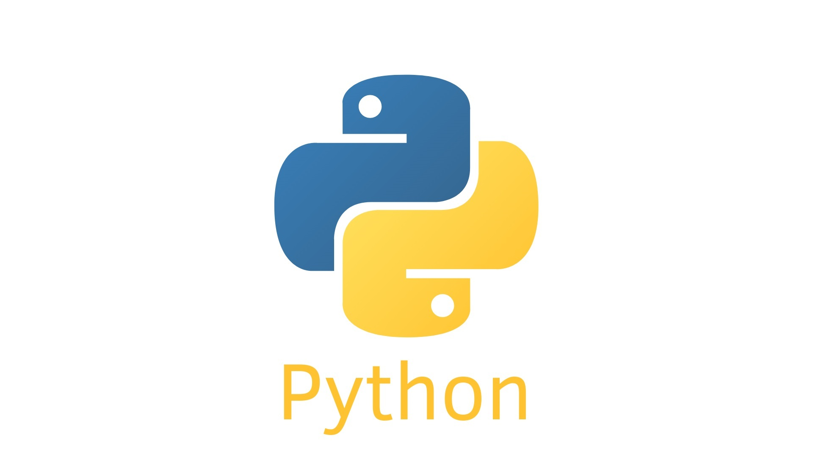
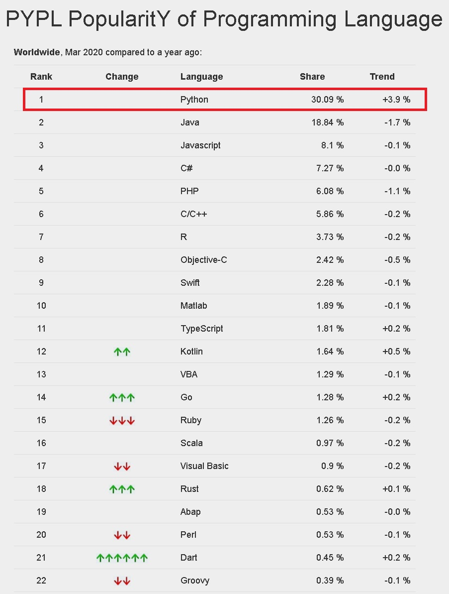

Python is a great programming language, with a simple grammar that is easy to understand, but can do a lot of tasks with just a very short line of code.
Because it’s simple, easy to understand, and very useful, Python is used in many important areas of life, such as AI development , or Website design , or education, healthcare. etc.
For those of you who want to start learning to code, this is the language that should be ranked at the top of your study category, because it is both easy to learn, easy to understand , and can be applied in work and life. as well as many opportunities for future growth.
For those of you who have experience with other languages, the more you need to learn about Python. The reason is that the future trend of the IT industry is to develop AI , in which Python is the number one choice, with strong advantages in information processing and image analysis. my photo.
Also with the development of Django - a web framework written in Python, you can also look for your opportunity in the web design field. if you can master this language.

Python’s development history
Python was originally developed by Guido van Rossum in 1991, to manage an operating system called Amoeba . With its advantages, Python has quickly gained popularity among programmers, and now on the date of this writing (March 1, 2020), Python has become the most popular language in the world.

Source: PYPL PopularitY of Programming Language - Rangking of programming languages around the world, based on Google information.
Characteristic of Python
Speaking of Python, we can remember the following characteristics:
Free programming language
Python is open source, so anyone can use it for free.
You can easily download and install from the Python homepage, or install via third-party software like Anaconda and use it right away.
On how to install Python please see Python Installation and Configuration
A language with simple syntax, easy to learn and understand
Compared to other languages that require strict punctuation and end-of-sentence such as C or Java, Python is said to have a fairly simple grammar, when it is only necessary to use indent (indent signs) to complete. into statement.
Because of its ease of learning and understanding, Python should be the top priority in the list of languages that beginners should learn.
Used to design famous applications.
Here are three famous applications written by Python:
- Dropbox
- Youtube
With its advantages in data analysis, processing and statistics, Python has been the first choice for applications that require a huge data source management system like the three above.
Can run on most popular operating systems.
Python can run most popular operating systems today, such as:
- Windows
- Linux
- Mac OS
- iOS
- Android
Python is not only used on computers, but can also be used to create apps that run on both iOS and Android platforms.
Has absolute advantage in artificial intelligence development
Python is especially dominant in the field of artificial intelligence development, because Python is integrated with rich open libraries and developed specifically for this. The most famous of these is Tensorflow.
After we go through the basics of Python, let’s explore how to create AI using Tensorflow.
Belongs to a self-translated programming language, an object-oriented programming language
Like Perl or Java, Python belongs to an interpreter, and is used as an object-oriented programming language.
These Kiyoshi concepts will be explained to you in the following articles.
There are rich references
Due to the popularity of Python programmers, we can easily find Python references on the internet with a few clicks of the mouse.
You can get information about Python through the following sources:
- Home Python
Python Homepage - Python Python ‘s Reference Page
3.8.2 documentation - Blog of famous programmers.
Also, there is a simple way, which is to learn right away at this website laptrinhcanban.com that Kiyoshi has designed specifically for beginners to learn programming.
Summary
In this article we have looked at Python and its features. In short, when it comes to Python you just need to remember:
- Is a programming language with a simple grammatical structure, easy to understand.
- Easy to learn, suitable for beginners.
- Has advantages in data analysis, artificial intelligence development.
HOME>> python for beginners>>introducing python